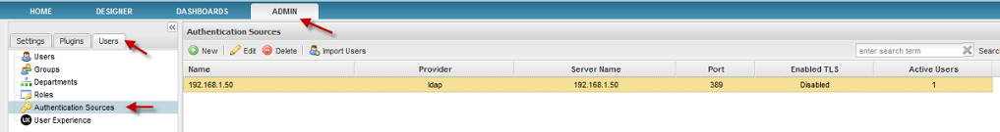
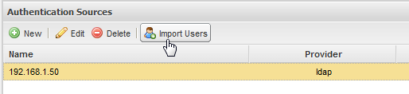
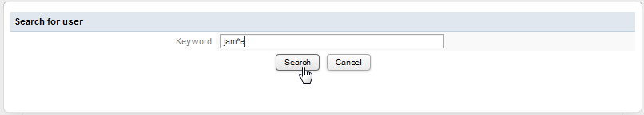
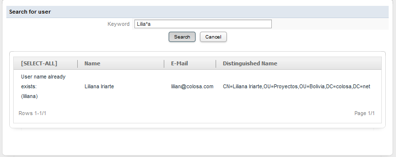
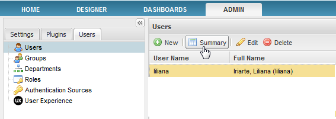
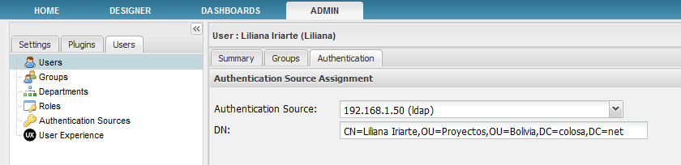

Overview
From version 2.0 on, the interface and properties to authenticate external users from LDAP or Active Directory has changed. As previous versions of ProcessMaker, with external authentication, users' profiles can be imported, so users can use the same username and password in ProcessMaker as they use for their other applications. ProcessMaker supports multiple authentication sources, so that one user may be verified by ProcessMaker, another by LDAP, another by Active Directory, etc.
ProcessMaker Community Edition only offers manual import of LDAP and Active Directory users and doesn't support synchronizing departments and groups. For organizations needing better integration with LDAP or Active Directory, the Enterprise Edition includes an Advanced LDAP plugin, which supports departments, one-click synchronization of departments and/or sub-departments and also groups, and automatic import of new users at login.
Configuring Authentication Sources
Go to ADMIN > Users > Authentication Sources displays a list of the available authentication sources.

To add a new Authentication Source, click on "New", then define the properties how to access the Authentication Source.

Define the following fields:
- Name: Enter a label which will identify the Authentication Source.
- Type: Select whether using LDAP or Active Directory.
- Server Name: Enter the IP address or domain name of the LDAP or Active Directory server. If located on the same machine, then enter "localhost".
- Port: Enter the port number for the LDAP or Active Directory service. By default, LDAP and Active Directory use port 389. If unsure, use the netstat -l and netstat -lnp commands in Linux/UNIX or netstat -a and netstat -ab commands in Windows to determine which port is being used.
- Enabled TLS: Select "Yes" if using Transport Security Layer (TLS) or Secure Socket Layer (SSL) to connect to the Authentication Source. Otherwise, select "No".
- Version: Select whether using version 2 or 3 of the LDAP protocol.
- Base DN: Enter the Distinguished Name from the Base object. In most cases this will be the domain components (dc) of the Distinguished Name. For example, the Base DN for processmaker.com would be "dc=colosa,dc=net". For more information on constructing DN chains, see this LDAP guide.
- Anonymous: If the LDAP or Active Directory server accepts anonymous searches for users, then select "Yes". If a login is required, then select "No".
- Search User: Field appears if not using anonymous logins. Enter a username to login to the LDAP or Active Directory server.
- Password: Field appears if not using anonymous logins. Enter a password to login to the LDAP or Active Directory server.
- Identifier for a imported user: Enter the object to identify users, which will be their username in ProcessMaker. For Active Directory, enter "samaccountname". For Open LDAP, enter "uid". Be careful what you type on this field since this is a case sensitive field. If you try to use uppercase or capitalization instead of the regular format, LDAP searches won't work.
- Object Classes: Enter the object classes where ProcessMaker will look for users. By default, the object class for Active Directory is "user" and for Open LDAP is "inetOrgPerson". If unsure which object class to use, enter "*", which is slower because it will cause ProcessMaker to look in all object classes. Deprecated from version 2.5.0
- Attributes: Define the attributes for search operations. Separate each attribute with a new line. At a minimum, it should include the "cn" (common name).
For example:
samaccountname
givenname
sn
userprincipalname
telephonenumber
-
- Deprecated from version 2.5.0
Please, refer to the following screenshot to see the available fields from version 2.5.0:

After filling the fields, click on Save to create the new Authentication Source.
Importing External Users
After configuring the Authentication Sources, go to the USERS menu and select Authentication Sources. In the list that appears, find an authentication source and click on its Import Userslink.

A search box will appear to search for users.

To search for all available users from the Authentication Source, leave the Keyword search box empty and click on Search. To search for specific users, enter text that appears in one of the search Attributes for the Authentication Source. The search is case insensitive and the wildcard "*" can be used to search for any number of characters (including zero characters).

A list of users will be returned by the search. Users whose usernames already exist in ProcessMaker can not be imported.

All other users will have a checkbox next to them which can be marked to import them. To select all available users, click on the [SELECT-ALL] link at the top. After selecting the users to be imported, then click the Import button at the bottom.
Note: If there are more than one page of users to be imported and even if the SELECT_ALL option is clicked, it will only import users who are listed on the current page.
After being imported, users should be able to login to ProcessMaker using their usernames and passwords from LDAP or Active Directory. If the external authentication source changes its address or goes offline, its users will not be able to login to ProcessMaker, so it is a good idea to convert those users to another authentication source or to ProcessMaker's internal authentication.
Note that it is not possible to change an imported user's password from inside ProcessMaker. Their passwords will have to be changed inside LDAP or Active Directory, however, their other information like email, address, telephone, etc. can be changed in ProcessMaker and is not synchronized with the external authentication source.
Assigning Authentication Sources to Existing Users
The Authentication Source can be changed for an existing user in ProcessMaker. It may be necessary to change a user's authentication source if their LDAP or Active Directory server moves to a new location or goes offline. Likewise, if a user's account gets deleted in the LDAP or Active Directory server, authentication should be switched from the external Authentication Source to ProcessMaker's internal authentication, so the user can continue to login to ProcessMaker.
Note: Only users which have the permission "PROCESSMAKER_ADMIN" can assign authentication sources to existing users.
To switch an user's authentication source, go to USERS select an imported user from the list and then click on Summary:

The Authentication tab will be enabled, where the Authentication Source Assignment will display:

The default option is "ProcessMaker", which is the way that users are internally verified by ProcessMaker. When users are first imported into ProcessMaker, their passwords are also imported and stored in ProcessMaker's databases, so the users will revert to using their original password at the time of import.
Otherwise, select from one of the available external authentication sources. In the DN text field, which appears for external authentication sources, enter the LDAP "Distinguished Name" for the user. The DN is a chain of information needed to validate a user, which depends upon the configuration of your LDAP or Active Directory, but generally consists of a cn (common name) or uid (user ID), ou (organizational unit) and dc (domain component). This chain should be written as if walking up the Directory Information Tree (DIT), starting from the specific user and going to the general domain name. For instance, if John Doe has a user ID of "johndoe" and is found in the organizational unit of "staff" at the domain of "example.com", then his DN chain would be "uid=johndoe,ou=staff,dc=example,dc=com". See this LDAP guide for more information about constructing DN chains.
After selecting the Authentication Source (and defining the DN), click on Save to change a user's authentication source.
Users can also be found by entering a search string into the DN text field and clicking Save. All users which match the search string will be displayed (however, their authentication source can only be changed individually). The search is case insensitive and the wildcard * can be used to match any number of characters. For instance a search for "jo*n" would find users "jon", "John Doe" and "jOannE". If the DN text box is left blank, then a list will be displayed of all the users found in an authentication source.
Note: From version 2.0.40 the Authentication tab has been deleted from the Summary options:

Changing user password after importing and synchronization
When users, who were imported to ProcessMaker, are related to an Active Directory and if their passwords need to be changed, this change must be performed inside the Active Directory and not in ProcessMaker.
Password must meet the following requirements:
- The password must be at least six characters long.
- The password must contain characters from at least three of the following five categories:
- English uppercase characters (A - Z)
- English lowercase characters (a - z)
- Base 10 digits (0 - 9)
- Non-alphanumeric (For example: !, $, #, or %)
- Unicode characters
- Do NOT use space after and before the password
Remember that if the password is changed in ProcessMaker user cannot login.
Check if the user is related to Active Directory by going to ADMIN > Users choosing the user which password need to be changed and click on Authentication. The Authorization Source Assignment will display. If the the Authentication Source option is an LDAP connection, the password must be changed in the Active Directory

If the the Authentication Source option is a MYSQL connection, the password must be changed in ProcessMaker: